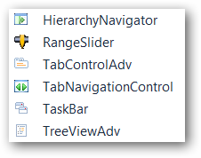
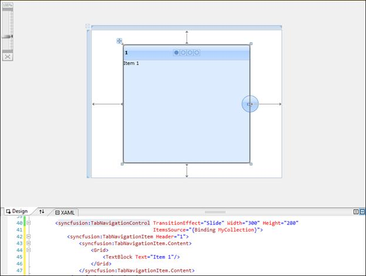
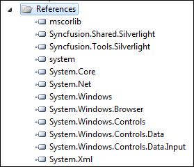
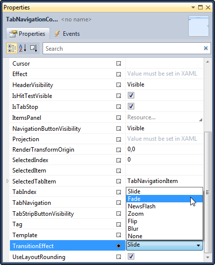

To add Tab Navigation control to a Visual Studio.NET project:
1. Open a VS2010 project. The Syncfusion controls are listed in the toolbox.

Figure 828: Syncfusion Controls
2. Click and drag the Tab Navigation control from the toolbox and drop it in the designer.

Figure 829: Tab Navigation Control in Designer
3. Syncfusion.Tools.Silverlight and Syncfusion.Shared.Silverlight assemblies will be added automatically to the application reference.

Figure 830: Assemblies added to References
4. Press F4 or open the properties window to customize the control by setting the required properties.

Figure 831: Customization using Properties Window
5. Add Items to the control manually or through Items Source property.
6. Press F5 to run the application.

Figure 832: The Output
To enable transition effects, items should be added to the control. The following sections explain the methods through which you can add items.